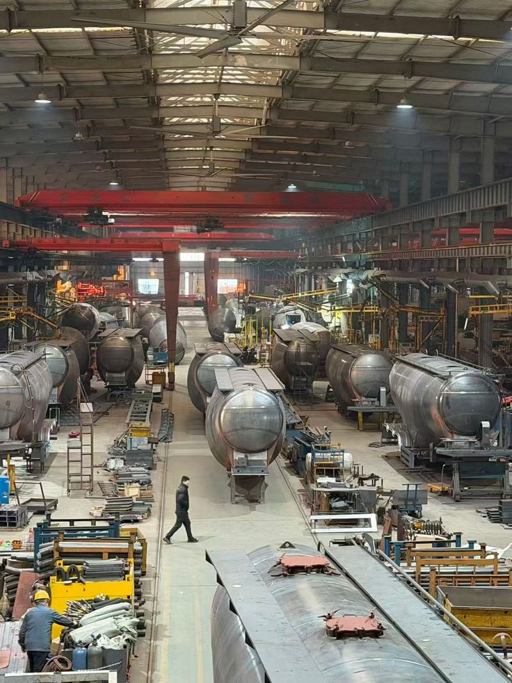
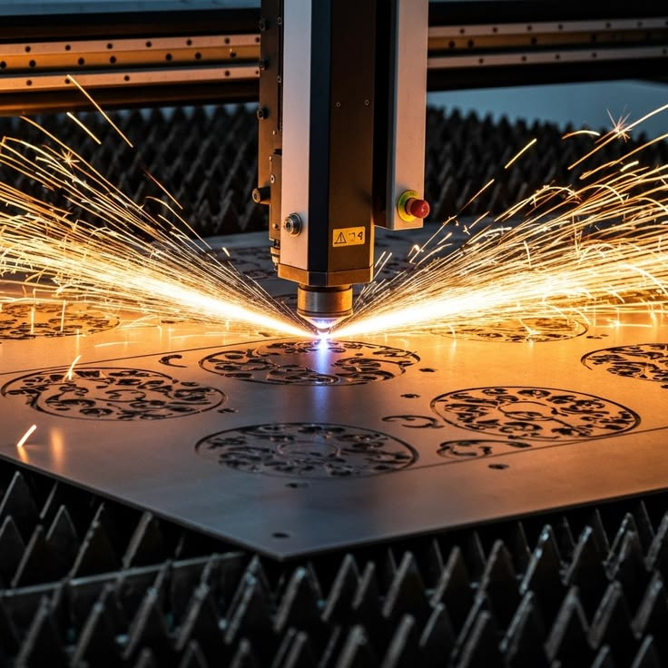
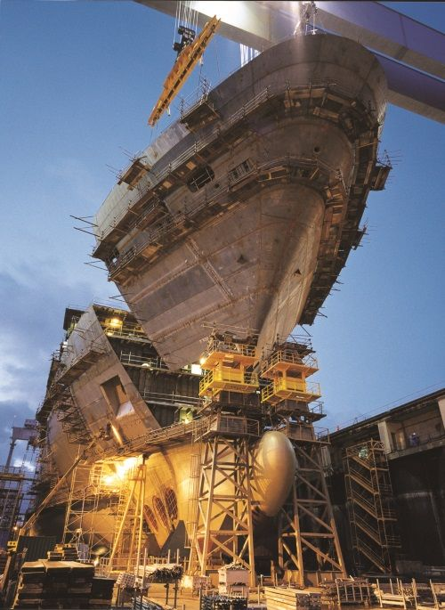

一、商业化与推广逻辑
1.1 产品价值如何转化为客户付费
船厂采购工业软件时，关注的是交期、材料、人工、设备和质量能否得到改善。产品需要把技术能力转化为可计算的经营价值。客户年度收益可以写为：
\[ B=B_m+B_l+B_e+B_q+B_i-B_o \]
其中：\(B_m\) 材料节约；\(B_l\) 人工工时节约；\(B_e\) 设备效率提升；\(B_q\) 质量和返工成本下降；\(B_i\) 减少停工和交期延误的收益；\(B_o\) 新增运维、服务器和管理成本。投资回收期为：
\[ Payback=\frac{I_0}{B} \]
其中 \(I_0\) 是软件、实施、接口、设备改造和培训的初始投入。
1.2 产品形态

建议形成三层产品。
| 产品层级 | 主要客户 | 功能范围 | 典型交付方式 |
|---|---|---|---|
| 标准版 | 中小船厂、加工企业 | 数据导入、自动套料、工艺和 NC | 单机或局域网部署 |
| 专业版 | 中大型船厂 | 余料、坡口、设备接口、MES/WMS | 私有化部署与实施 |
| 集团版 | 船舶集团、多基地企业 | 多厂区、数据主线、质量和 AI | 集团平台加边缘节点 |
标准版需要控制配置复杂度，尽量在数周内上线。专业版强调工艺深度和设备兼容。集团版重点解决主数据、权限、集团标准、跨厂区调度和数据治理。
1.3 收费模式

软件授权费：可以按模块、并发用户、工作站、设备数量或厂区收费。船舶工业软件通常更适合永久授权加年度维护，或者多年订阅与私有化部署结合。
实施和集成费：包括流程调研、数据迁移、接口开发、工艺规则配置、后处理器开发、报表和权限设置。
设备联调费：针对激光、等离子、火焰、坡口、喷码和码垛设备进行现场测试和参数配置。
年度运维费：包括技术支持、缺陷修复、兼容性维护、规则更新和小版本升级。可按软件合同额的 10%–20% 进行情景测算，最终由市场和服务范围决定。
增值服务：套料算法高级模块；工艺参数优化；设备效率分析；质量预测；数据治理；工业 AI；多厂区材料协同。
1.4 销售路径
船舶工业软件采购周期较长，通常需要技术交流、数据测试、试用、试切、商务谈判、信息安全审核和投资审批。建议采用以下路径：
潜在客户筛选 → 工艺访谈和痛点量化 → 客户历史数据离线测试 → 提交材料、时间和质量对照报告 → 小范围设备试切 → 示范线或车间试点 → 项目验收 → 扩展到更多设备和厂区 → 年度运维与升级
首次成交可以从一个高价值、范围清晰的场景进入，例如厚板坡口、余料管理或某类分段套料。验证收益后，再扩展到完整生产准备平台。
1.5 客户分层
大型总装船厂：特点是系统多、流程复杂、设备品牌多、信息安全要求高。它们关注集团标准、接口、稳定性、权限和长期服务。销售重点应包括：国产化和供应安全；与既有 PLM、ERP、MES 和 WMS 兼容；多设备后处理；数据不出厂；设计变更和质量追溯；大规模并发和高可用。
中小船厂：它们通常 IT 人员有限，更关注价格、简单易用和上线速度。产品应提供预配置模板、Excel 导入、条码报工和远程支持。
船舶分段和钢板加工企业：这类企业关注材料利用率、加工效率、设备兼容和订单交付。它们可能没有完整船舶设计系统，软件需要支持 DXF 和零件清单导入。
海工和特种装备企业：它们的零件批量小、坡口复杂、项目定制程度高，更愿意为工艺深度和复杂算法付费。
船舶维修和改装企业：维修项目图纸不完整、现场测绘多、任务紧急，需要快速建模、逆向数据接入和临时任务处理能力。
1.6 标杆案例的作用

工业客户很难仅凭功能演示采购关键生产软件。一个可信的标杆案例需要提供：客户类型和生产场景；上线前流程；上线范围；零件和钢板样本量；对照方法；材料利用率变化；生产准备工时变化；NC 一次通过率；返工和错切变化；投资和回收期；连续运行时间。客户名称涉及保密时，可以使用「某大型总装船厂」，但指标口径和样本量仍应明确。
1.7 渠道与生态
项目可以建立四类渠道：设备销售渠道——随平面切割、坡口切割、喷码和码垛产线销售；船厂数字化渠道——与 MES、ERP、PLM 和系统集成商合作；设计院和行业机构——参与数据标准、工艺标准和培训；区域产业渠道——通过船舶产业园、技改项目和示范工厂推广。
软硬件一体化具有明显渠道优势。设备项目可以带动软件进入现场，软件又能增强设备方案的差异化和持续服务收入。
1.8 推广阶段
第一阶段：产品定型和标杆验证。目标是完成核心算法、工艺规则、主要设备接口和 1 至 3 个示范客户。重点证明技术和工程可行性。
第二阶段：区域复制。围绕湖北、长江经济带和主要沿海造船基地复制。建立标准实施方法、行业模板和区域服务人员。
第三阶段：全国规模化。覆盖总装船厂、分段厂、海工和船舶配套企业，形成多设备、多软件和多船型兼容能力。
第四阶段：国际化。国际市场需要补充多语言、多单位制、国际船级社规则、海外设备接口、数据合规和本地服务伙伴。可以先随国产切割装备出口，再独立推广软件。
1.9 商业化风险
| 风险 | 影响 | 应对措施 |
|---|---|---|
| 客户切换谨慎 | 销售周期长 | 并行运行、小范围试点 |
| 定制需求过多 | 项目毛利下降 | 配置平台和标准接口 |
| 设备品牌复杂 | 后处理维护成本高 | 建立插件式后处理框架 |
| 标杆数据不足 | 客户难以判断价值 | 建立统一试点指标 |
| 关键人员依赖 | 交付能力难复制 | 形成规则库和实施手册 |
| 回款周期长 | 现金流压力 | 分阶段验收和设备项目协同 |
| 国外软件降价 | 替代空间缩小 | 强调工艺、服务和软硬协同 |
| 客户数据保密 | AI 与云服务受限 | 私有化和联邦式数据方案 |
二、项目资金投入估算
2.1 估算口径
资金需求与目标范围密切相关。仅开发一个套料算法原型，与建设能够连接船厂系统、驱动多品牌设备并支持规模交付的工业软件平台，投入差异很大。建议分为三个口径：
| 建设口径 | 目标 | 预计周期 | 资金投入 |
|---|---|---|---|
| 技术原型 | 完成几何引擎、基础套料和单设备 NC 输出 | 12–18 个月 | 800 万–1,500 万元 |
| 工业产品 | 完成工艺、设备、多系统集成和示范线 | 24–36 个月 | 3,000 万–5,000 万元 |
| 规模化平台 | 多船厂、多设备、集团部署、AI 和服务网络 | 4–6 年 | 8,000 万–1.5 亿元 |
结合申报书提出的船舶专用算法、可信数字主线、坡口切割、喷码划线、码垛、工业大模型数据底座和全国推广目标，较合理的项目定位接近「工业产品 + 规模化平台」。建议首期三年预算约 3,500 万至 4,500 万元，五至六年累计投入约 8,000 万至 1.2 亿元。
2.2 三年产品化阶段预算
以下以总投入 4,000 万元为中性方案：
| 投入类别 | 金额 | 占比 | 主要用途 |
|---|---|---|---|
| 研发人员 | 1,650 万元 | 41.25% | 几何、算法、软件、测试和产品 |
| 设备与实验平台 | 650 万元 | 16.25% | 切割、坡口、喷码、服务器和测量设备 |
| 示范船厂实施 | 500 万元 | 12.50% | 驻场、接口、数据治理和试生产 |
| 第三方软件与基础设施 | 250 万元 | 6.25% | 数据库、开发工具、仿真和安全环境 |
| 测试认证与知识产权 | 180 万元 | 4.50% | 测试、软著、专利和安全测评 |
| 市场与行业推广 | 250 万元 | 6.25% | 展会、试点、演示和行业合作 |
| 培训与服务体系 | 180 万元 | 4.50% | 教材、运维平台和实施培训 |
| 项目管理和预备费 | 340 万元 | 8.50% | 管理、差旅和不可预见支出 |
| 合计 | 4,000 万元 | 100% | — |
2.3 研发团队预算
假设三年平均配置 35 至 45 名人员，综合年度人力成本按 35 万至 50 万元估算，人员总投入约 1,500 万至 2,000 万元。建议团队结构：
| 团队 | 人数 | 主要职责 |
|---|---|---|
| 计算几何与套料算法 | 6–8 | NFP、碰撞检测、多目标优化 |
| CAD/CAM 与工艺 | 6–8 | 图形解析、坡口、路径和后处理 |
| 平台与后端 | 5–7 | 数据主线、接口、权限和服务 |
| 前端与交互 | 3–4 | 套料编辑器、可视化和审核界面 |
| 设备控制与联调 | 5–6 | 激光、等离子、火焰和坡口设备 |
| 测试与质量 | 4–5 | 自动化测试、回归和可靠性 |
| 船舶工艺专家 | 3–5 | 工艺规则、现场验证和客户需求 |
| 产品与项目管理 | 3–4 | 产品规划、实施和验收 |
工业软件研发需要长期维护测试数据、后处理器和客户版本，项目上线后仍需保留核心团队。
2.4 实验和示范平台预算
如果公司已有切割设备和实验条件，可以降低投入。若需要新建较完整联调平台，可参考：
| 设备或平台 | 估算金额 |
|---|---|
| 平面激光 / 等离子试验设备及改造 | 200 万–500 万元 |
| 坡口切割或多轴头 | 100 万–300 万元 |
| 喷码划线和码垛验证单元 | 80 万–200 万元 |
| GPU 和计算服务器 | 80 万–200 万元 |
| 测量与质量检测设备 | 50 万–120 万元 |
| 数据存储、备份和安全环境 | 50 万–100 万元 |
| 实验工装、材料和耗材 | 每年 50 万–100 万元 |
如果完整建设一条工业级示范产线，设备投入可能达到 1,000 万至 3,000 万元甚至更高。该部分可以与客户产线、公司现有设备和地方示范项目共建，避免全部由软件项目承担。
2.5 示范船厂投入
单个大型船厂试点可能包含：
| 项目 | 估算范围 |
|---|---|
| 流程和数据调研 | 20 万–50 万元 |
| PLM/ERP/MES/WMS 接口 | 50 万–150 万元 |
| 设备后处理和联调 | 30 万–100 万元 |
| 工艺规则配置 | 30 万–80 万元 |
| 数据清洗和迁移 | 20 万–80 万元 |
| 驻场实施和培训 | 30 万–100 万元 |
| 试切材料与质量验证 | 20 万–50 万元 |
| 单厂合计 | 200 万–500 万元 |
若首期建设 2 至 3 个示范船厂，建议预留 500 万至 1,000 万元。部分投入可以由客户技改预算、设备合同或政府示范资金共同承担。
2.6 六年累计投入情景
| 情景 | 三年投入 | 后三年投入 | 六年累计 | 适用目标 |
|---|---|---|---|---|
| 审慎 | 3,000 万元 | 2,500 万元 | 5,500 万元 | 国内细分产品和少量客户 |
| 中性 | 4,000 万元 | 5,000 万元 | 9,000 万元 | 全国推广和多设备生态 |
| 积极 | 5,000 万元 | 8,000 万元 | 1.3 亿元 | 集团平台、AI 和国际化 |
中性方案更符合「核心算法自主、软硬件协同、多个示范船厂、全国推广」的目标。
2.7 资金来源建议
| 来源 | 适合支持内容 |
|---|---|
| 公司自有资金 | 核心研发和产品长期维护 |
| 科技专项资金 | 算法、工业软件和研发平台 |
| 智能制造技改资金 | 示范线、设备和系统集成 |
| 首版次软件政策 | 国产软件首次应用和保险补偿 |
| 首台套装备政策 | 软硬件一体化示范装备 |
| 产业基金 | 市场推广、团队和规模化 |
| 银行科技贷款 | 设备、实施和营运资金 |
| 客户联合投入 | 定制接口、示范应用和工艺包 |
| 高校联合项目 | 算法、工业 AI 和人才培养 |
政府资金更适合支持共性技术、示范平台和首版次应用。产品销售、售后服务和持续升级仍需形成市场化现金流。
2.8 收入和回收期情景
申报书提出单个船厂软件及实施服务约 30 万至 50 万元，软硬件一体化项目约 500 万至 2,000 万元。需要注意，30 万至 50 万元更接近标准模块或小型客户，复杂大型船厂的接口、设备和实施范围可能显著超过该金额。
可以构建中性销售情景：
| 收入来源 | 数量 | 单价假设 | 收入 |
|---|---|---|---|
| 标准软件项目 | 20 家 | 50 万元 | 1,000 万元 |
| 大型软件集成项目 | 6 家 | 300 万元 | 1,800 万元 |
| 软硬件产线项目 | 5 条 | 1,000 万元 | 5,000 万元 |
| 运维升级和数据服务 | — | — | 500 万元 |
| 合计 | — | — | 8,300 万元 |
这属于累计合同额情景，并不等于利润。设备项目收入中包含硬件采购、制造、安装和售后成本；软件项目也要扣除研发、实施和销售费用。项目回收期应基于现金流计算：
\[ NPV=\sum_{t=1}^{N}\frac{CF_t}{(1+r)^t}-I_0 \]
其中 \(CF_t\) 是第 \(t\) 年净现金流，\(r\) 是折现率，\(I_0\) 是初始投资。当净现值大于零时，项目在该折现率下具有财务可行性。
2.9 资金投入结论
如果项目目标只覆盖智能套料核心算法和单台设备 NC 输出，投入约 800 万至 1,500 万元可以形成原型和初步产品。
如果目标包括船舶工艺规则、可信数字主线、多设备后处理、PLM/MES/WMS 接口和示范船厂，建议三年投入 3,500 万至 4,500 万元。
如果进一步建设全国服务网络、集团级平台、船舶工业数据底座、AI 功能和国际化能力，建议五至六年累计投入 8,000 万至 1.2 亿元。完整建设多套工业级示范产线时，总投入还可能进一步增加。